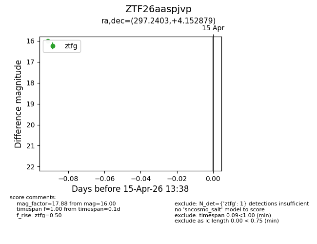
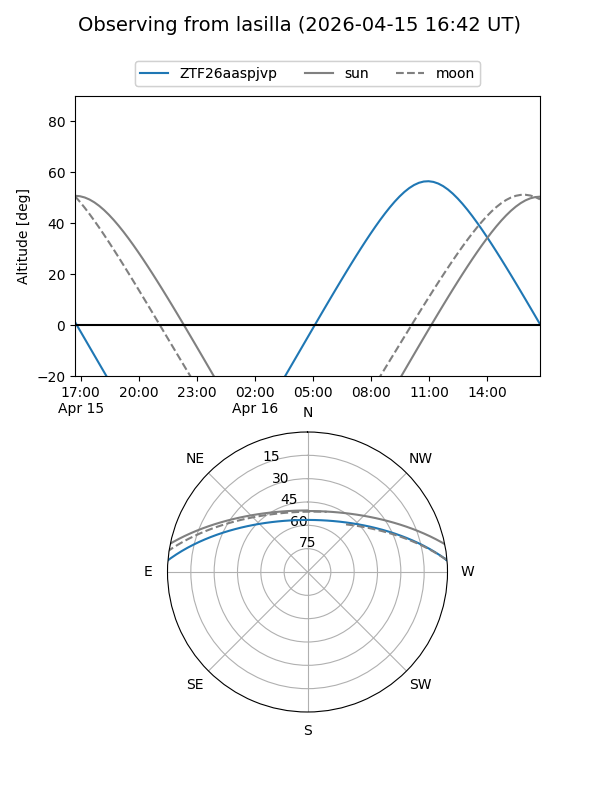
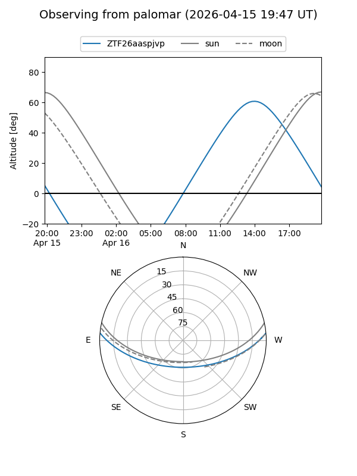
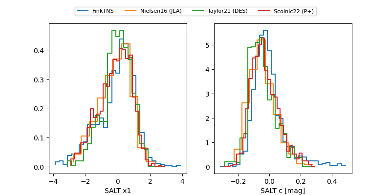

ZTF26aaspjvp
Target ZTF26aaspjvp at 2026-04-15 13:47
Aliases and brokers:
FINK: link
Lasair: link
ALeRCE: link
alt names
ZTF26aaspjvp (ztf,fink_ztf)
Coordinates:
equatorial (ra, dec) = 297.2403,+4.15288
equatorial (HMS+DMS) = 19:48:57.67,+04:09:10.36
galactic (l, b) = (43.3370,-10.80347)
Flags:
Photometry:
last ztfg=16.00
1 ztfg detections
Lightcurve

Visibility


Additional plots
